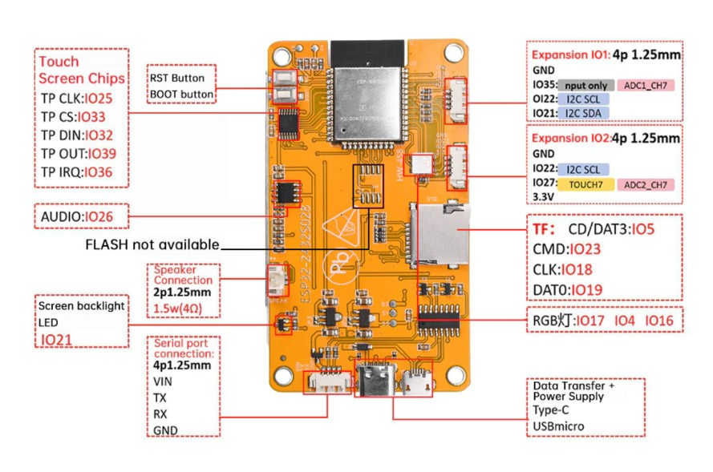

เฟิร์มแวร์พร้อมใช้ 5 ตัวสำหรับบอร์ดจอสัมผัส ESP32-2432S028R — ติดตั้งผ่านสาย USB ได้ทันที ไม่ต้องลงโปรแกรม รองรับ Chrome และ Edge
ต่อไม่ติด: กดปุ่ม BOOT บนบอร์ดค้างไว้ตอนกดติดตั้ง ·
ไม่เห็นพอร์ตเลย: ลงไดรเวอร์ก่อน —
CH340 สำหรับ Windows ·
macOS (Linux มีในตัว)
เครื่องวัดอัตราไต่ระดับ (วาริโอ) สำหรับร่มร่อน / พารามอเตอร์
เซ็นเซอร์: BMP280+AHT20 ที่ CN1 · GPS ที่ P3 · ไม่มีเซ็นเซอร์ = โหมด DEMO อัตโนมัติ
จับเวลาต่อรอบในสนามด้วยประตู GPS ไม่ต้องวางเซ็นเซอร์ข้างแทร็ก
GPS ที่ P3 (TX→IO35) · ต่อ IO22→GPS RX เพิ่มเพื่อโหมด 10Hz · ไม่มี GPS = โหมด DEMO
ระบบนำร่อง GPS สำหรับเรือตกปลา / รถ / รถตัดหญ้า
รับวิทยุ SBUS หรือ CRSF/ELRS · ขับ Servo/ESC ผ่าน PCA9685 · ไม่มี GPS = โหมด DEMO จำลองเรือ
จอสั่งงานเครื่อง CNC GRBL (3018 ฯลฯ) แบบไม่ต้องใช้คอม
ไม่ต่อเครื่อง CNC = โหมด DEMO จำลอง GRBL ให้ลองเล่นได้ทันที
แท่นหมุนแบ่งองศาคุมสเต็ปมอเตอร์ — คู่เครื่อง CNC หรือถ่ายรูปสินค้า 360°
ยังไม่ต่อมอเตอร์ก็ลอง UI ได้ทันที (สั่งหมุนลอย ๆ ไม่มีผลอะไร)
ใช้ร่วมกันได้ทุกโปรเจกต์ — จุดต่อขยาย (Expansion IO1/IO2) คือคอนเนกเตอร์ P3 และ CN1 ที่อ้างถึงในตารางต่อสายของแต่ละแผงด้านบน

| อุปกรณ์ | ใช้กับ | |
|---|---|---|
| บอร์ด ESP32 CYD 2.8" จอสัมผัส TFT ตัวเครื่องหลัก — ต้องมี |
VARIOLAPBOATCNCROTARY | SHOPEE ↗ อีกร้าน ↗ |
| PCA9685 16-Channel PWM Servo Driver ขับหางเสือ/ESC/servo กระบะเหยื่อ · ต่อ I²C ที่ CN1 · หัวใจของ Autopilot |
BOAT | SHOPEE ↗ |
| GY-87 (MPU6050 + เข็มทิศ + BMP180) เข็มทิศนำทาง + IMU · ต่อ I²C ที่ CN1 · เลือกรุ่น GY-87 ในตัวเลือกร้าน · เฟิร์มแวร์ตรวจพบเอง |
BOAT | SHOPEE ↗ |
| GPS ATGM336H (GPS+BeiDou) พร้อม EEPROM ต่อที่ P3: TX→IO35 · จำเป็นสำหรับ Lap Timer และ Autopilot / เสริมให้ Variometer |
VARIOLAPBOAT | SHOPEE ↗ |
| เซ็นเซอร์ AHT20 + BMP280 อุณหภูมิ/ความชื้น/ความดัน · ต่อที่ CN1 (I²C) · หัวใจของ Variometer |
VARIO | SHOPEE ↗ |
| ลำโพงจิ๋ว 4Ω 3W (35×25mm) เสียง vario / เสียงตัดรอบ / เสียงแจ้งโหมด · ต่อช่อง SPEAK · ตรงสเปกวงจรเสียงบอร์ด (4Ω) |
VARIOLAPBOAT | SHOPEE ↗ |
| สาย Molex MX1.25 2P ยาว 100mm สายต่อลำโพงเข้าช่อง SPEAK |
VARIOLAPBOAT | SHOPEE ↗ |
| สาย JST 1.25mm ตัวผู้-เมีย 4P ยาว 15ซม. (5 คู่) ต่อเซ็นเซอร์ที่ CN1 และ GPS ที่ P3 |
VARIOLAPBOAT | SHOPEE ↗ |
| KS UBEC 5V (low-noise RF filter) ไฟเลี้ยง PCA9685 + servo หางเสือ/กระบะเหยื่อ · เลือกรุ่น 3A ก็พอ · เสียงรบกวนต่ำ ไม่กวน GPS/เข็มทิศ · ห้ามดึงไฟ servo จากบอร์ด CYD โดยตรง |
BOAT | SHOPEE ↗ |
| NA077 Logic Level Converter 2 Channel 3.3V↔5V แปลงระดับสัญญาณจอ (3.3V) ↔ บอร์ด GRBL (5V) แทนวงจรตัวต้านทาน R1k/R2k · ใช้ Chan1 ช่องเดียวครบทั้งไป-กลับ · ขา LV ต้องต่อ 3.3V จาก CN1 ของจอ |
CNC | SHOPEE ↗ |
ไฟล์ STL สำหรับบอร์ด ESP32-2432S028R — ใช้ได้กับทุกโปรเจกต์